NY
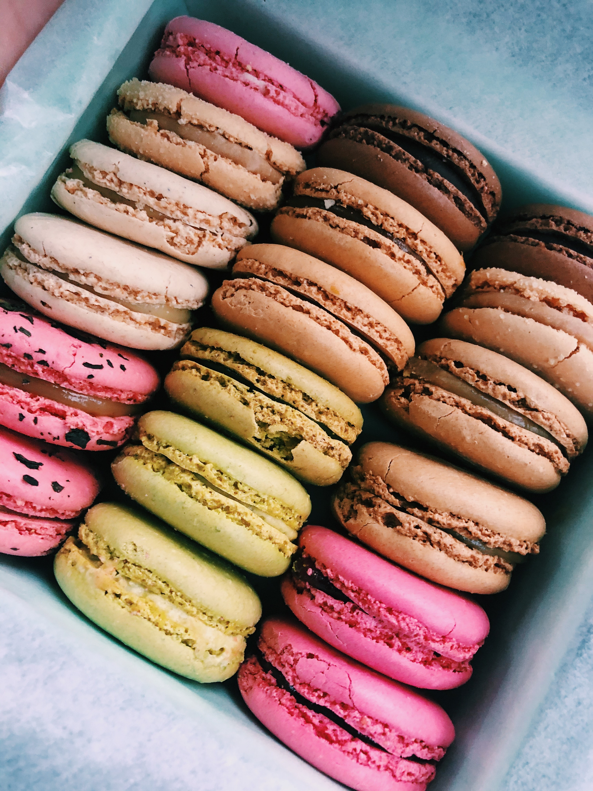Laduree. (Authentic French Restaurant) - The recipe that originated in the mid-19th century has remained the same since, but has since spread from Paris to locations in the US. With its unique seasonal offerings, Laduree lets you fill a box with a mix to try a little of everything.
NJ
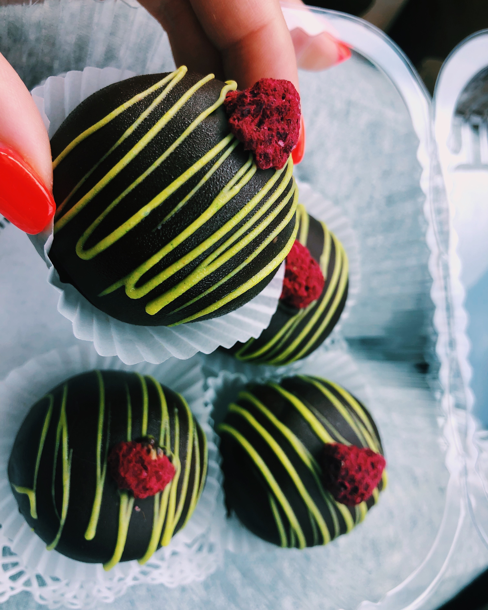The Flaky Tart. (Bakery) - A neighborhood bakery that focuses on artisan sweet treats and savory options. Everyday brings a new assortment of pastries and offerings. Seen above: "Rasberry Key Lime Truffles".
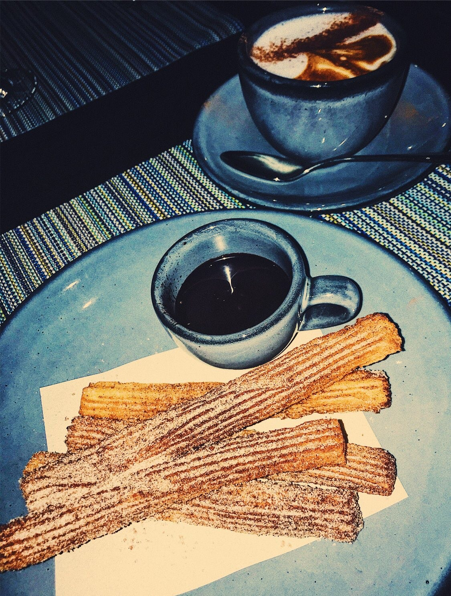Albarino. (Galician Tapas & Wine Bar) - Can't have the paella without getting churros for dessert! "Churros": traditional fried dough, cinnamon, spiced hot chocolate sauce.
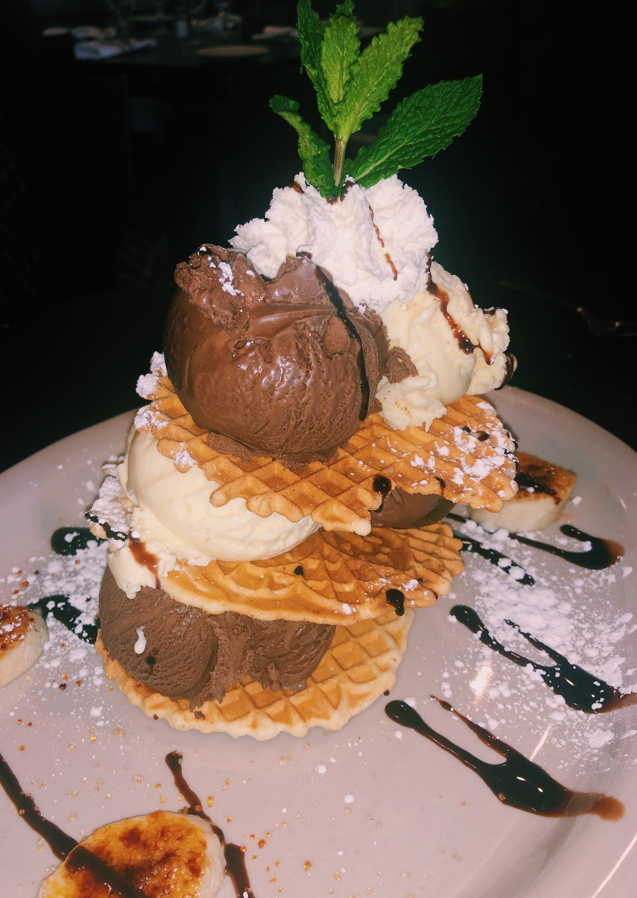Pazzo. (Italian & Pizza Restaurant) - On the menu, this dessert claims it's for two people... I consider that to be a suggestion. "Pizelle Tower": fresh homemade pizelle stacked with tahitan vanilla and dark chocolate gelato, drizzled with chocolate ganache and caramelized bananas.
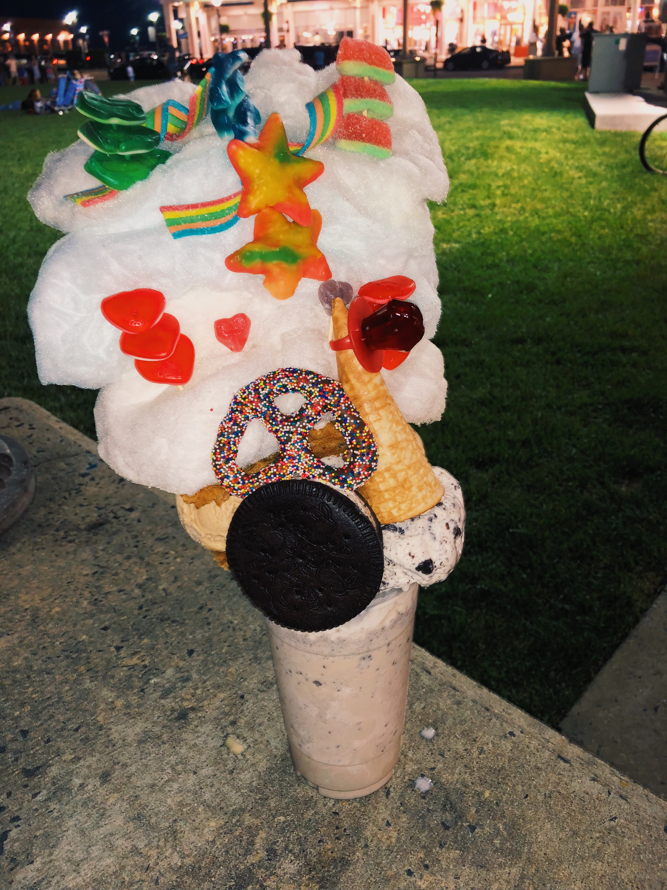Coney Waffle. (Ice Cream & Sweet Shop) - Talk about over the top. The Coney Waffle, originally established in Coney Island. Well-known for their waffles that pair so well with ice cream. But, if you go to Coney Waffle, you must try their milkshakes. "The Tornado" is shown above which has a cookies & cream milkshake base, topped with cotton candy, a giant oreo, chocolate covered pretzel, waffle, chewy candy & a few extra scoops of ice cream, just incase there wasn't enough.
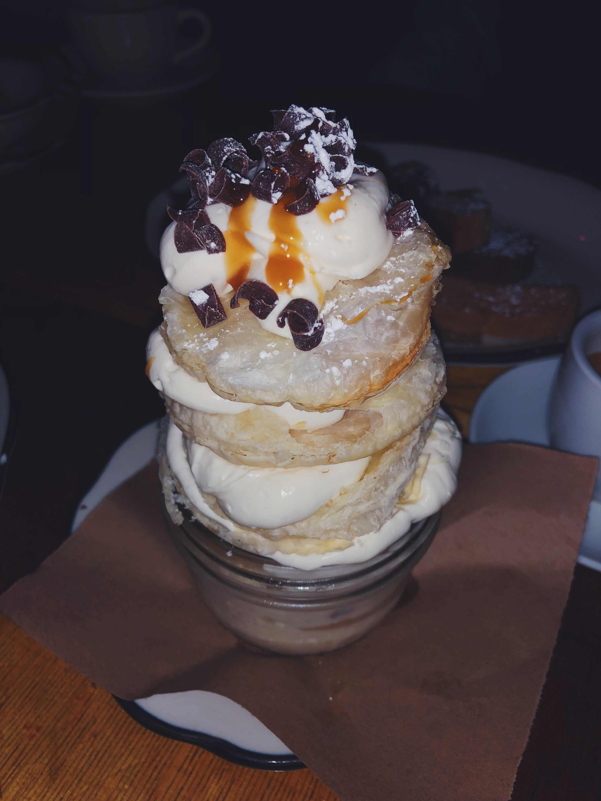Birravino. (Italian Restaurant) - An interesting take on a classic italian dessert... cannolis. "Pasticchio": deconstructed puff pastry with cannoli cream, topped with chocolate curls and caramel drizzle.
MIAMI
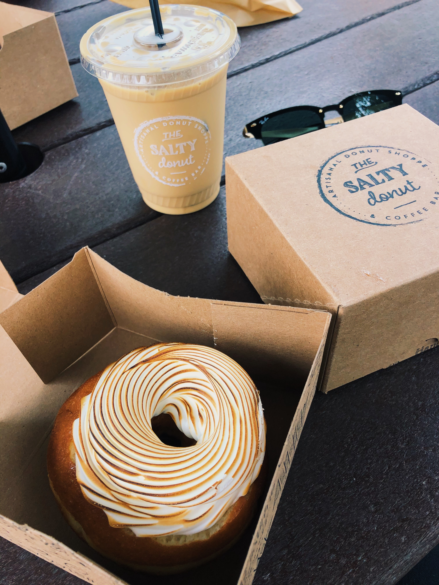The Salty Donut. (Artisanal Donut Shoppe & Coffee Bar) - Using high-quality ingredients, this Miami donut shop has received many, many awards. Everything is made in-house, in small batches to ensure the best donut you will ever eat. And what's a donut without a specialty craft coffee to pair it with? Go in and put together your perfect match! For me, it was the "White Chocolate Tres Leches": 24 hr brioche soaked in a homemade rum-infused three milk mixture, bottom crusted with white chocolate & finished with torched meringue. Paired with an oat milk iced latte.
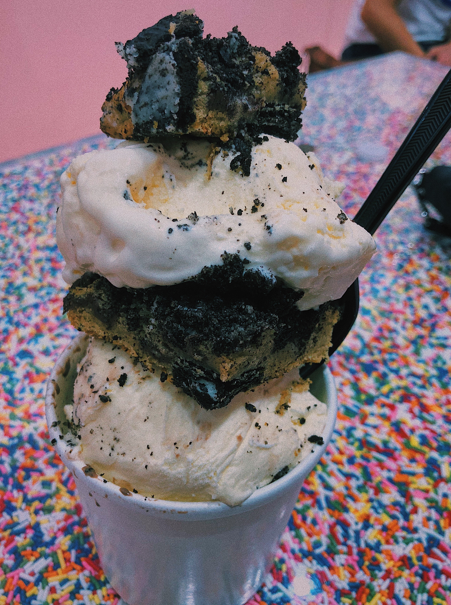Night Owl Cookies. (Cookie Shop) - This Miami cookie shop aims to deliver warm and home-made cookies and with their unique & classic offerings, there is sure to be a cookie for everyone. Cookies are baked everyday and delivered warm. If you're in the mood for something a little more than just a cookie... pick one to pair with ice cream of your choice. For me, vanilla ice cream with a "Cookies & Cream" cookie: signature dough stuffed with chocolate chips and topped with oreos.
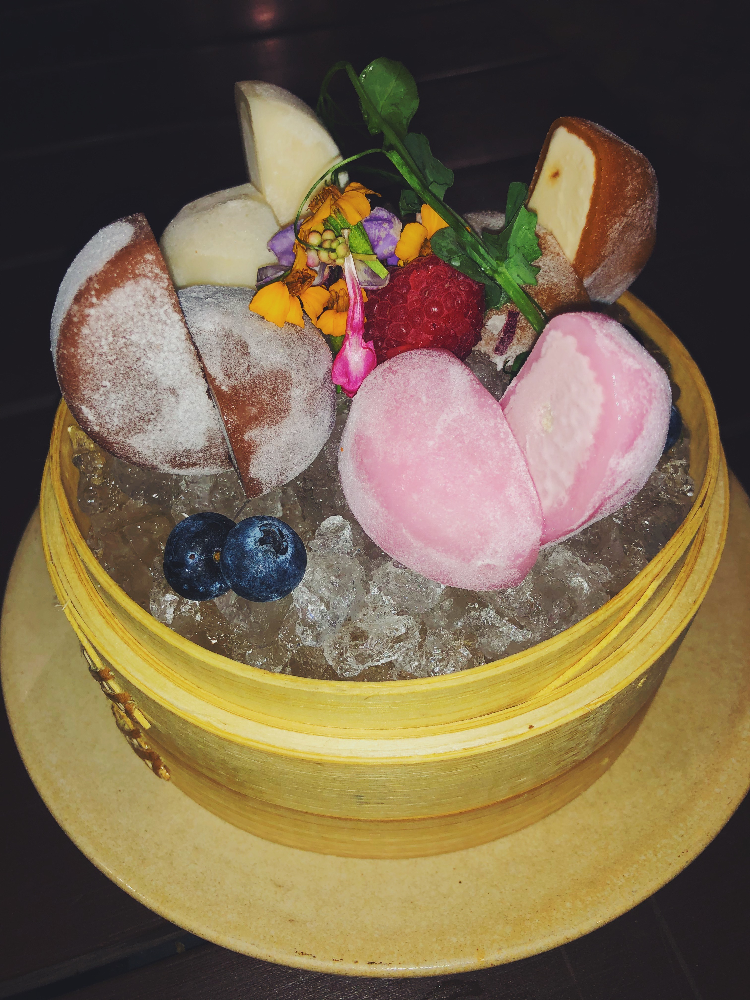Pubbelly Sushi. (Japanese Cuisine) - A traditional dessert made in Japanese culture. "Mochi", is a rice cake molded into a shape and then stuffed with ice cream. When ordering this at Pubbelly, the restaurant gives you its seasonal flavors.
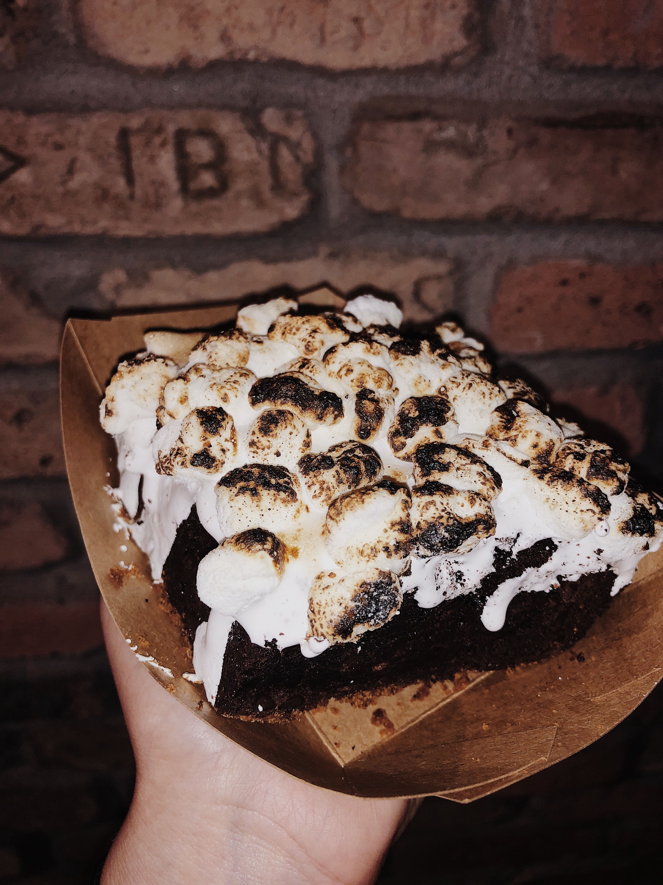Fireman Derek's. (Bake Shop) - From pies to cakes to cheesecakes to cookies and beyond, this place covers it all. Well-known for its pies, there is an abundant of unique flavors. One of its baked goods, the "S'mores Brownie": graham cracker crust, chocolatey brownie base & toasted marshmallows on-top.
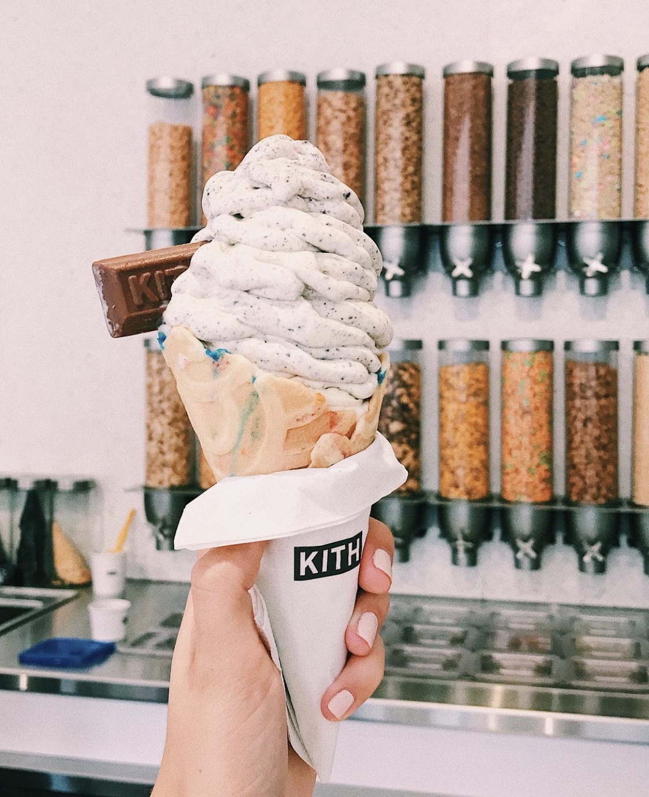Kith Treats. (Cafe) - Blended ice cream mixed with cereal and choose your own toppings. So, it counts as breakfast, right? "The Witness": frosted flakes, cinnamon toast crunch, cap'n crunch, crushed oreos & twix. Pick your base too... cone or cup? Oh, and don't leave without taking a peek-in at the shop for apparel.